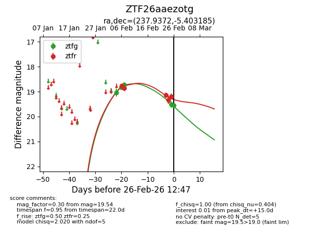
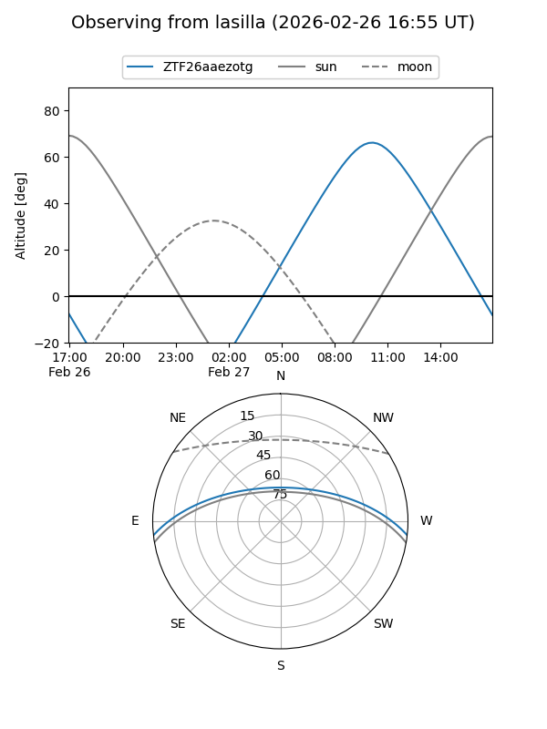
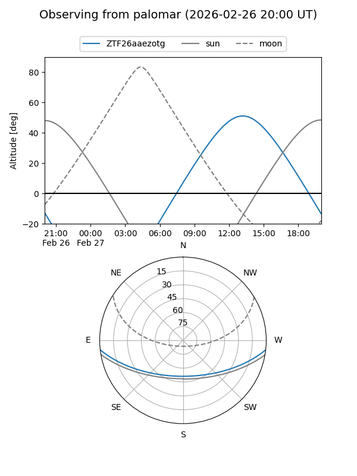
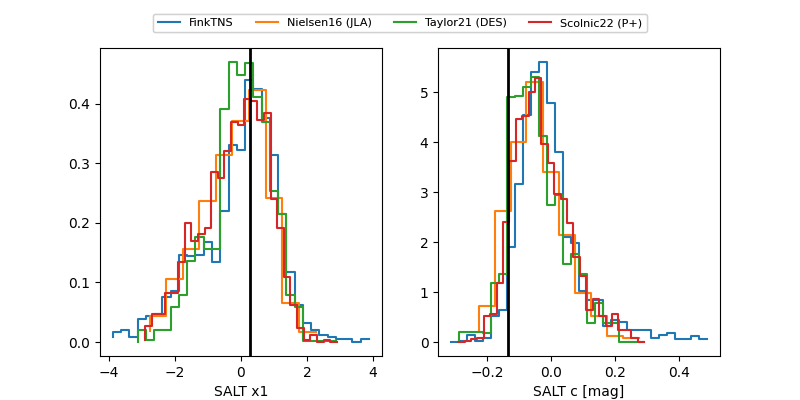

ZTF26aaezotg
Target ZTF26aaezotg at 2026-02-26 12:48
Aliases and brokers:
FINK: link
Lasair: link
ALeRCE: link
alt names
ZTF26aaezotg (ztf,fink_ztf)
Coordinates:
equatorial (ra, dec) = 237.9372,-5.40318
equatorial (HMS+DMS) = 15:51:44.94,-05:24:11.46
galactic (l, b) = (3.0919,+35.64295)
Flags:
Photometry:
last ztfg=19.54, ztfr=19.20
5 ztfg, 5 ztfr detections
Lightcurve

Visibility


Additional plots
